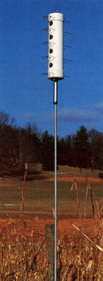
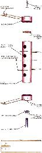

Construct a house for one of nature's most pleasant-and effective -garden-pest predators.
Spring is on the way, bringing with it dreams of a bountiful vegetable garden - and nightmares of a summer spent battling bugs just to win eating privileges. This year, in addition to using the customary lines of defense against insect damage (such as companion planting, crop rotation, soil amendment, and - when necessary - the application of organic pesticides), you might want to consider making your life easier by "hiring" some real professionals in the field: purple martins!
These huge swallows are ideal garden neighbors . . . not only because of their voracious appetites (one bird can consume 400 flies or several thousand mosquitoes in a single day, the equivalent of its own weight in flying insects!), but also for their beautiful song and their gregarious nature. Since martins seem to enjoy being near people and often favor man-made structures, it'd be worth the effort to try your hand at attracting the working warblers by installing one or more of these easy-to-build purple martin apartment houses in your yard.
Each complex is nothing more than a 27" length of 6" thin-wall PVC pipe (the plastic drain, waste, and vent tubing sold in plumbing stores) that's capped at both ends and pierced with four 2-1/4" access holes spaced vertically 4" apart - top edge to bottom edge - from each other. Lengths of 1/8" coppercoated steel welding rod, bent to a modified W shape, slide into sets of 1/8" holes (bored 3-3/4" apart and 1-3/4" below the lower edge of each access opening) to provide perches . . . and support for the four 1/4" X 5-3/4" plywood disks that serve as floors.
Building one of these garden-helper houses should take no longer than half an hour and requires little more than a hacksaw, two pairs of pliers, a ruler, a 2-1/4" hole saw, and a drill with 1/8", 1/4", and 5/16" bits.
First, temporarily slip the caps in place and position the four access holes - then drill the perch-bar holes and the single 1/8" screw hole. (Note that the lower and upper perches slide through the caps and the pipe, as does the No. 6 X 3/4" screw.) With that done, remove the caps, drill the drain holes in the center of the lower cap and the bolt hole through the upper one, and install the floor flange and eyebolt. (You'll probably have to enlarge the flange's mounting holes slightly to accept the 1/4" carriage bolts.)
Next, bend the perch bars - starting from the center and working outward - using the dimensions indicated . . . but allow a little extra length in the top bar's center loop, since it must be bent upward at a 90° angle to catch beneath the screwhead. Finally, cut out the floor disks (it's a good idea to coat them first with paint or water sealant), and piece the house together, working from the bottom up.
Since purple martins prefer to nest high above the ground, you should either thread a length of pipe into the floor flange and slip it over a 10- or 15-foot mounted pole, or - to facilitate cleaning and the removal of nests built by intruding sparrows - suspend the house from a rope attached at one end to the eyebolt and threaded through a post-mounted pulley. Place the house in an open area as near to a body of water as possible, and your small investment should yield a great return . . . in the form of reliable and "cheep" insect control!
|
 |
 |
|